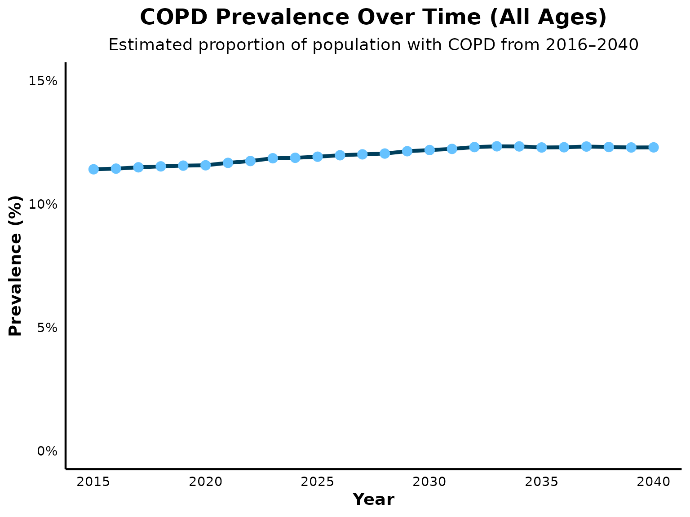
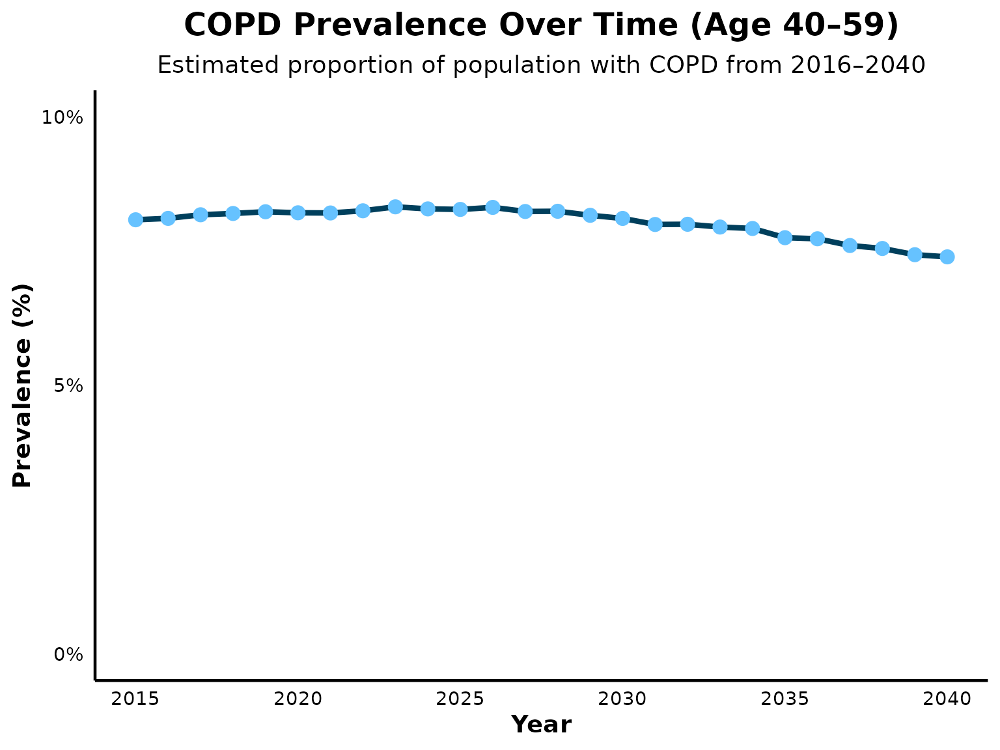
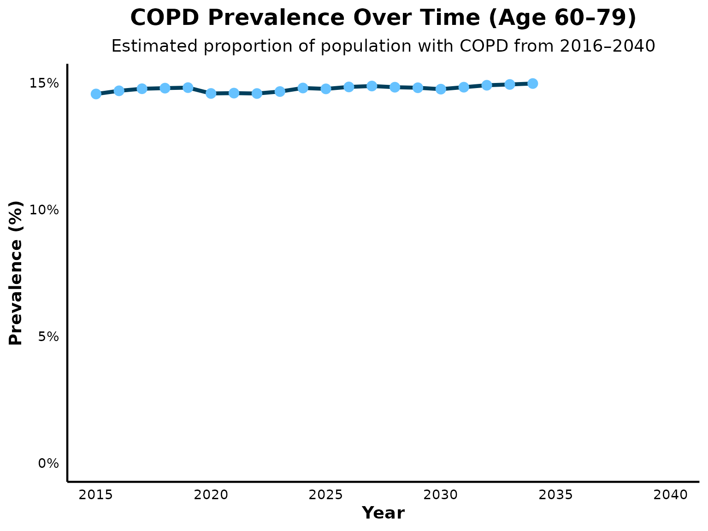
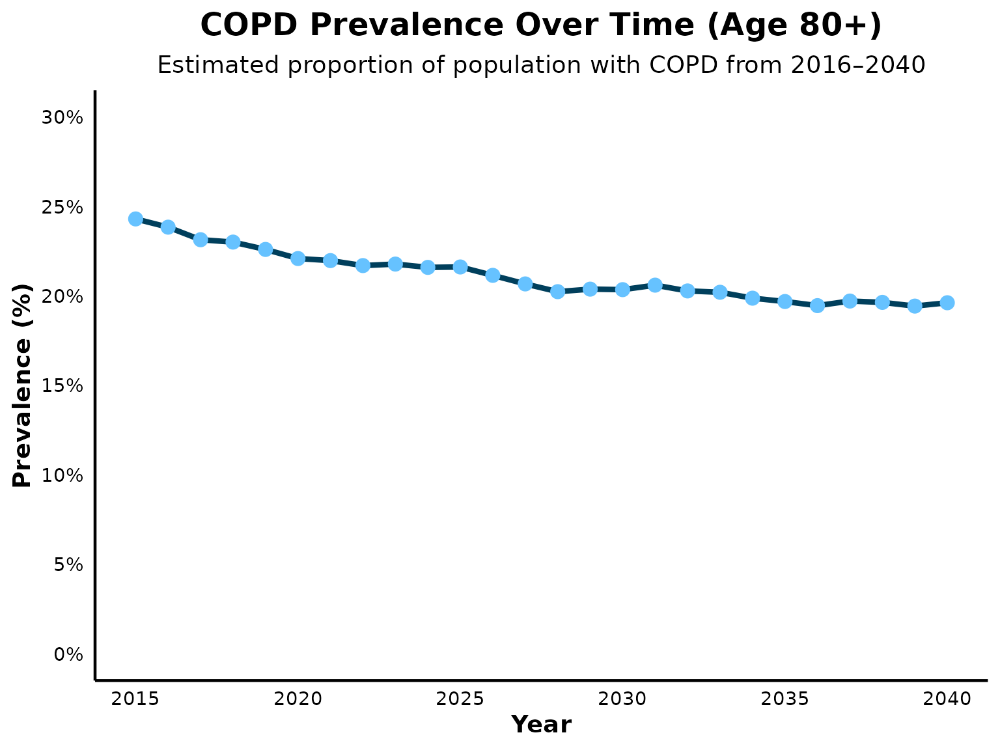

US_Calibrate COPD Prevalence
US_Calibrate_COPD_Prevalence.RmdOverview
This document outlines the calibration process undertaken to align the model’s outputs with U.S.-based validation targets for COPD prevalence, using NHANES data in which COPD was defined according to the Lower Limit of Normal (LLN) definition. The calibration was conducted over a 25-year simulation time horizon.
Validation Reference:
Tilert et al. 2013 (DOI: 10.1186/1465-9921-14-103)
Validation Target (Age-Specific Prevalence):
- 40–59 years: 8.1%
- 60–79 years: 14.4%
Validation Target (Sex-Specific Prevalence):
- Males: 12.0%
- Females: 8.6%
It is important to note that the EPIC model simulates individuals aged 40 and older, including those ≥80 years, whereas Tilert et al. 2013 included only individuals aged 40–79.
Given this limitation, the calibration emphasized preserving the sex-specific prevalence ratio observed in Tilert et al. 2013 (1.4:1; 12.0% males vs. 8.6% females) as the validation target. The model was deemed adequately calibrated if this ratio was maintained, even if absolute prevalence values by sex differed slightly due to inclusion of older age groups.
Evolution of LLN Reference Equations and Impact on COPD Prevalence Estimation
Reference equations used to define the LLN for spirometry to diagnose COPD have evolved over time, moving from race-specific models toward more inclusive, race-neutral approaches. Tilert et al. 2013 defined COPD using LLN values derived from the Hankinson equation, a race-specific model widely used in earlier guidelines. In contrast, current guidelines recommend using the Global Lung Function Initiative (GLI) race-neutral reference equations. A recent analysis by Cadham et al. 2024 (DOI: 10.1186/s12931-024-02841-y) compared COPD prevalence estimates based on the Hankinson and GLI race-neutral equations and found no significant differences between the two approaches.
Step 1: Load libraries and setup
Here, we load the necessary libraries. We also set the default simulation settings and specify the time horizon for the simulation (25 years).
library(epicR)
library(ggplot2)
library(dplyr)
library(knitr)
# Load EPIC general settings
settings <- get_default_settings()
settings$record_mode <- 0
settings$n_base_agents <- 1e5
input <- get_input(jurisdiction = "us")
time_horizon <- 26
input$values$global_parameters$time_horizon <- time_horizonStep 2: Modify intercept value to calibrate proportion of COPD prevalence by age group and sex
The sex-specific intercepts were adjusted to match the age-specific prevalence targets (age groups: 40–59 and 60–79 years) while maintaining a 1.4:1 male-to-female ratio.
input$values$COPD$logit_p_COPD_betas_by_sex <- cbind(male = c(intercept = -4.30190, age = 0.033070, age2 = 0, pack_years = 0.025049 ,
current_smoking = 0, year = 0, asthma = 0),
female = c(intercept = -4.40202, age = 0.027359 , age2 = 0, pack_years=0.030399, current_smoking = 0, year = 0, asthma = 0))Step 3: Run EPIC
# Run EPIC simulation
results <- simulate(settings = settings, input = input$values, extended_results = TRUE)## === EPIC Simulation Configuration ===## Jurisdiction: CANADA## Time horizon: 26 years## Number of agents: 100,000## Event recording: DISABLED## =====================================##
## Starting simulation...## No active session - initializing automatically## Initializing the session## Working directory: /home/runner/work/epicR/epicR/vignettes## Running EPIC model (with custom input parameters)## Record mode: record_mode_none (0)## Note: No events will be recorded. Use record_mode_event (2) or record_mode_agent (1) to record events.## Simulating 100000 base agents: 10% 20% 30% 40% 50%
## 60% 70% 80% 90% 100%## Simulation completed in 6.4 seconds## Collecting results...## Collecting extended results...## Terminating the session## Done!
output <- results$extendedStep 4: Create data tables by age category
# Determine overall COPD prevalence
COPDprevalence_ctime_age<-output$n_COPD_by_ctime_age
COPDprevalence_ctime_age<-as.data.frame(output$n_COPD_by_ctime_age)
totalpopulation<-output$n_alive_by_ctime_age
# Overall prevalence of COPD
alive_age_all <- rowSums(output$n_alive_by_ctime_age[1:26, 40:111])
COPD_age_all <- rowSums (output$n_COPD_by_ctime_age[1:26, 40:111])
prevalenceCOPD_age_all <- COPD_age_all / alive_age_all
# Prevalence by age 40-59
alive_age_40to59 <- rowSums(output$n_alive_by_ctime_age[1:26, 40:59])
COPD_age_40to59 <-rowSums(output$n_COPD_by_ctime_age[1:26, 40:59])
prevalenceCOPD_age_40to59 <- COPD_age_40to59 / alive_age_40to59
# Prevalence by age 60-79
alive_age_60to79 <- rowSums(output$n_alive_by_ctime_age[1:26, 60:79])
COPD_age_60to79 <-rowSums(output$n_COPD_by_ctime_age[1:26, 60:79])
prevalenceCOPD_age_60to79 <- COPD_age_60to79 / alive_age_60to79
# Prevalence by age 80+
alive_age_over80 <- rowSums(output$n_alive_by_ctime_age[1:26, 80:111])
COPD_age_over80 <-rowSums(output$n_COPD_by_ctime_age[1:26, 80:111])
prevalenceCOPD_age_over80 <- COPD_age_over80 / alive_age_over80
# Display summary of COPD prevalence by age group
COPD_prevalence_summary <- data.frame(
Year = 2015:2040,
Prevalence_all = prevalenceCOPD_age_all,
Prevalence_40to59 = prevalenceCOPD_age_40to59,
Prevalence_60to79 = prevalenceCOPD_age_60to79,
Prevalence_over80 = prevalenceCOPD_age_over80
)
kable(COPD_prevalence_summary,
caption = "COPD Prevalence by Age Group Over Time",
digits = 3)| Year | Prevalence_all | Prevalence_40to59 | Prevalence_60to79 | Prevalence_over80 |
|---|---|---|---|---|
| 2015 | 0.114 | 0.081 | 0.137 | 0.243 |
| 2016 | 0.114 | 0.081 | 0.137 | 0.238 |
| 2017 | 0.115 | 0.082 | 0.138 | 0.231 |
| 2018 | 0.115 | 0.082 | 0.137 | 0.230 |
| 2019 | 0.116 | 0.082 | 0.137 | 0.226 |
| 2020 | 0.116 | 0.082 | 0.137 | 0.221 |
| 2021 | 0.117 | 0.082 | 0.139 | 0.220 |
| 2022 | 0.117 | 0.083 | 0.139 | 0.217 |
| 2023 | 0.119 | 0.083 | 0.139 | 0.218 |
| 2024 | 0.119 | 0.083 | 0.139 | 0.216 |
| 2025 | 0.119 | 0.083 | 0.140 | 0.216 |
| 2026 | 0.120 | 0.083 | 0.140 | 0.211 |
| 2027 | 0.120 | 0.082 | 0.142 | 0.207 |
| 2028 | 0.120 | 0.082 | 0.143 | 0.202 |
| 2029 | 0.121 | 0.082 | 0.144 | 0.204 |
| 2030 | 0.122 | 0.081 | 0.145 | 0.203 |
| 2031 | 0.122 | 0.080 | 0.145 | 0.206 |
| 2032 | 0.123 | 0.080 | 0.147 | 0.203 |
| 2033 | 0.123 | 0.079 | 0.147 | 0.202 |
| 2034 | 0.123 | 0.079 | 0.147 | 0.199 |
| 2035 | 0.123 | 0.078 | 0.148 | 0.197 |
| 2036 | 0.123 | 0.077 | 0.148 | 0.195 |
| 2037 | 0.123 | 0.076 | 0.149 | 0.197 |
| 2038 | 0.123 | 0.076 | 0.149 | 0.196 |
| 2039 | 0.123 | 0.074 | 0.150 | 0.194 |
| 2040 | 0.123 | 0.074 | 0.149 | 0.196 |
Step 5: Visualize data by age category
COPD prevalence is projected to decline moderately between 2025 and 2050, as reported by Boers et al. 2023 (DOI: 10.1001/jamanetworkopen.2023.46598). A similar trend is observed in EPIC model projections of overall COPD prevalence. However, a limitation of EPIC include underestimating the size of the population aged 80 and older. As COPD prevalence increases with age, this results in a overestimation of overall COPD prevalence in the simulated population.
COPD prevalence all age groups

COPD prevalence from age 40 to 59

COPD prevalence from age 60 to 79

COPD prevalence from age 80+

Step 6: Create data tables by sex to check if gender distribution matches Tilert et al 2013 (doi:10.1186/1465-9921-14-103))
# Calculate COPD prevalence by sex over time
alive_sex <- output$n_alive_by_ctime_sex
COPD_sex <- output$n_COPD_by_ctime_sex
prevalenceCOPD_sex <- COPD_sex / alive_sex
prevalenceCOPD_sex<-as.data.frame (prevalenceCOPD_sex)
# Rename columns
colnames(prevalenceCOPD_sex) <- c("Male", "Female")
prevalenceCOPD_sex$Year <- 2015:2040
# Display summary of COPD prevalence by sex
kable(prevalenceCOPD_sex,
caption = "COPD Prevalence by Sex Over Time",
digits = 3
)| Male | Female | Year |
|---|---|---|
| 0.137 | 0.091 | 2015 |
| 0.137 | 0.092 | 2016 |
| 0.137 | 0.093 | 2017 |
| 0.137 | 0.094 | 2018 |
| 0.137 | 0.095 | 2019 |
| 0.137 | 0.095 | 2020 |
| 0.138 | 0.096 | 2021 |
| 0.138 | 0.098 | 2022 |
| 0.139 | 0.099 | 2023 |
| 0.139 | 0.100 | 2024 |
| 0.138 | 0.101 | 2025 |
| 0.138 | 0.103 | 2026 |
| 0.139 | 0.103 | 2027 |
| 0.138 | 0.104 | 2028 |
| 0.139 | 0.105 | 2029 |
| 0.139 | 0.106 | 2030 |
| 0.139 | 0.107 | 2031 |
| 0.140 | 0.108 | 2032 |
| 0.140 | 0.108 | 2033 |
| 0.139 | 0.109 | 2034 |
| 0.139 | 0.108 | 2035 |
| 0.139 | 0.109 | 2036 |
| 0.139 | 0.109 | 2037 |
| 0.138 | 0.110 | 2038 |
| 0.137 | 0.110 | 2039 |
| 0.137 | 0.110 | 2040 |